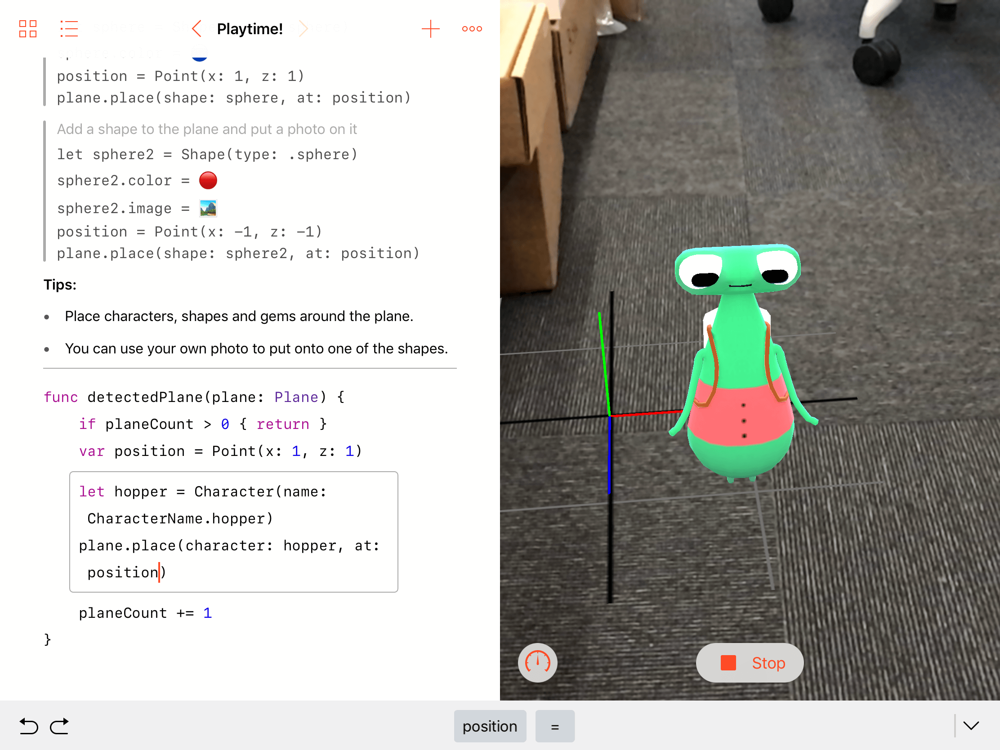

- 00 开篇词 锚定一个点，然后在这个点上深耕.md.html
- 01 建立你自己的iOS开发知识体系.md.html
- 02 App 启动速度怎么做优化与监控？.md.html
- 03 Auto Layout 是怎么进行自动布局的，性能如何？.md.html
- 04 项目大了人员多了，架构怎么设计更合理？.md.html
- 05 链接器：符号是怎么绑定到地址上的？.md.html
- 06 App 如何通过注入动态库的方式实现极速编译调试？.md.html
- 07 Clang、Infer 和 OCLint ，我们应该使用谁来做静态分析？.md.html
- 08 如何利用 Clang 为 App 提质？.md.html
- 09 无侵入的埋点方案如何实现？.md.html
- 10 包大小：如何从资源和代码层面实现全方位瘦身？.md.html
- 11 热点问题答疑（一）：基础模块问题答疑.md.html
- 12 iOS 崩溃千奇百怪，如何全面监控？.md.html
- 13 如何利用 RunLoop 原理去监控卡顿？.md.html
- 14 临近 OOM，如何获取详细内存分配信息，分析内存问题？.md.html
- 15 日志监控：怎样获取 App 中的全量日志？.md.html
- 16 性能监控：衡量 App 质量的那把尺.md.html
- 17 远超你想象的多线程的那些坑.md.html
- 18 怎么减少 App 电量消耗？.md.html
- 19 热点问题答疑（二）：基础模块问题答疑.md.html
- 20 iOS开发的最佳学习路径是什么？.md.html
- 21 除了 Cocoa，iOS还可以用哪些 GUI 框架开发？.md.html
- 22 细说 iOS 响应式框架变迁，哪些思想可以为我所用？.md.html
- 23 如何构造酷炫的物理效果和过场动画效果？.md.html
- 24 A_B 测试：验证决策效果的利器.md.html
- 25 怎样构建底层的发布和订阅事件总线？.md.html
- 26 如何提高 JSON 解析的性能？.md.html
- 27 如何用 Flexbox 思路开发？跟自动布局比，Flexbox 好在哪？.md.html
- 28 怎么应对各种富文本表现需求？.md.html
- 29 如何在 iOS 中进行面向测试驱动开发和面向行为驱动开发？.md.html
- 30 如何制定一套适合自己团队的 iOS 编码规范？.md.html
- 31 iOS 开发学习资料和书单推荐.md.html
- 32 热点问题答疑（三）.md.html
- 33 iOS 系统内核 XNU：App 如何加载？.md.html
- 34 iOS 黑魔法 Runtime Method Swizzling 背后的原理.md.html
- 35 libffi：动态调用和定义 C 函数.md.html
- 36 iOS 是怎么管理内存的？.md.html
- 37 如何编写 Clang 插件？.md.html
- 38 热点问题答疑（四）.md.html
- 39 打通前端与原生的桥梁：JavaScriptCore 能干哪些事情？.md.html
- 40 React Native、Flutter 等，这些跨端方案怎么选？.md.html
- 41 原生布局转到前端布局，开发思路有哪些转变？.md.html
- 42 iOS原生、大前端和Flutter分别是怎么渲染的？.md.html
- 43 剖析使 App 具有动态化和热更新能力的方案.md.html
- 用户故事 我是如何学习这个专栏的？.md.html
- 结束语 慢几步，深几度.md.html
- 捐赠
06 App 如何通过注入动态库的方式实现极速编译调试？
你好，我是戴铭。
在上一篇文章中，我和你分享了链接器的基础知识。今天我们再继续聊聊，动态库链接器的实际应用，也就是编译调试的提速问题。
iOS 原生代码的编译调试，都是通过一遍又一遍地编译重启 App 来进行的。所以，项目代码量越大，编译时间就越长。虽然我们可以通过将部分代码先编译成二进制集成到工程里，来避免每次都全量编译来加快编译速度，但即使这样，每次编译都还是需要重启 App，需要再走一遍调试流程。
对于开发者来说，提高编译调试的速度就是提高生产效率。试想一下，如果上线前一天突然发现了一个严重的bug，每次编译调试都要耗费几十分钟，结果这一天的黄金时间，一晃就过去了。到最后，可能就是上线时间被延误。这个责任可不轻啊。
那么问题来了，原生代码怎样才能够实现动态极速调试，以此来大幅提高编译调试速度呢？在回答这个问题之前，我们先看看有哪些工具是这么玩儿的。了解了它们的玩法，我们也就自然清楚这个问题的答案了。
Swift Playground
说到iOS代码动态极速调试的工具，你首先能想到的估计就是 Playground。它是 Xcode 里集成的一个能够快速、实时调试程序的工具，可以实现所见即所得的效果，如下图所示：

图1 Playground工具实时调试示例
可以看到，任何的代码修改都能够实时地在右侧反馈出来。
Flutter Hot Reload
Flutter 是 Google 开发的一个跨平台开发框架，调试也是快速实时的。官方的效果动画如下：

图2 Flutter使用示例
可以看到，在 Flutter 编辑器中修改文字 clicked 为 tapped 后点击 reload，模拟器中的文字立刻就改变了，程序没有重启。同样地，修改按钮图标也会立刻生效。
接下来，我们先看看 Flutter 是怎么实现实时编译的。
Flutter 会在点击 reload 时去查看自上次编译以后改动过的代码，重新编译涉及到的代码库，还包括主库，以及主库的相关联库。所有这些重新编译过的库都会转换成内核文件发到 Dart VM 里，Dart VM 会重新加载新的内核文件，加载后会让 Flutter framework 触发所有的Widgets 和 Render Objects 进行重建、重布局、重绘。
Flutter 为了能够支持跨平台开发，使用了自研的 Dart 语言配合在 App 内集成 Dart VM 的方式运行 Flutter 程序。目前 Flutter 还没有达到 Cocoa 框架那样的普及程度，所以如果你不是使用 Flutter 来开发 iOS 程序的话，想要达到极速调试应该要怎么做呢？
Injection for Xcode
所幸的是，John Holdsworth 开发了一个叫作 Injection 的工具可以动态地将 Swift 或 Objective-C 的代码在已运行的程序中执行，以加快调试速度，同时保证程序不用重启。John Holdsworth 也提供了动画演示效果，如下：

图3 Injection使用示例
作者已经开源了这个工具，地址是https://github.com/johnno1962/InjectionIII 。使用方式就是 clone 下代码，构建 InjectionPluginLite/InjectionPlugin.xcodeproj ；删除方式是，在终端里运行下面这行代码：
rm -rf ~/Library/Application\ Support/Developer/Shared/Xcode/Plug-ins/InjectionPlugin.xcplugin
构建完成后，我们就可以编译项目。这时添加一个新的方法：
- (void)injected
{
NSLog(@"I've been injected: %@", self);
}
然后在这个方法中添加一个断点，按下 ctrl + = ，接下来你会发现程序运行时会停到断点处，这样你的代码就成功地被运行中的 App 执行了。那么，Injection 是怎么做到的呢？
Injection 会监听源代码文件的变化，如果文件被改动了，Injection Server 就会执行 rebuildClass 重新进行编译、打包成动态库，也就是 .dylib 文件。编译、打包成动态库后使用 writeSting 方法通过 Socket 通知运行的 App。writeString 的代码如下：
- (BOOL)writeString:(NSString *)string {
const char *utf8 = string.UTF8String;
uint32_t length = (uint32_t)strlen(utf8);
if (write(clientSocket, &length, sizeof length) != sizeof length ||
write(clientSocket, utf8, length) != length)
return FALSE;
return TRUE;
}
Server 会在后台发送和监听 Socket 消息，实现逻辑在 InjectionServer.mm 的 runInBackground 方法里。Client 也会开启一个后台去发送和监听 Socket 消息，实现逻辑在 InjectionClient.mm里的 runInBackground 方法里。
Client 接收到消息后会调用 inject(tmpfile: String) 方法，运行时进行类的动态替换。inject(tmpfile: String) 方法的具体实现代码，你可以点击这个链接查看。
inject(tmpfile: String) 方法的代码大部分都是做新类动态替换旧类。inject(tmpfile: String) 的入参 tmpfile 是动态库的文件路径，那么这个动态库是如何加载到可执行文件里的呢？具体的实现在inject(tmpfile: String) 方法开始里，如下：
let newClasses = try SwiftEval.instance.loadAndInject(tmpfile: tmpfile)
你先看下 SwiftEval.instance.loadAndInject(tmpfile: tmpfile) 这个方法的代码实现：
@objc func loadAndInject(tmpfile: String, oldClass: AnyClass? = nil) throws -> [AnyClass] {
print("???? Loading .dylib - Ignore any duplicate class warning...")
// load patched .dylib into process with new version of class
guard let dl = dlopen("\(tmpfile).dylib", RTLD_NOW) else {
throw evalError("dlopen() error: \(String(cString: dlerror()))")
}
print("???? Loaded .dylib - Ignore any duplicate class warning...")
if oldClass != nil {
// find patched version of class using symbol for existing
var info = Dl_info()
guard dladdr(unsafeBitCast(oldClass, to: UnsafeRawPointer.self), &info) != 0 else {
throw evalError("Could not locate class symbol")
}
debug(String(cString: info.dli_sname))
guard let newSymbol = dlsym(dl, info.dli_sname) else {
throw evalError("Could not locate newly loaded class symbol")
}
return [unsafeBitCast(newSymbol, to: AnyClass.self)]
}
else {
// grep out symbols for classes being injected from object file
try injectGenerics(tmpfile: tmpfile, handle: dl)
guard shell(command: """
\(xcodeDev)/Toolchains/XcodeDefault.xctoolchain/usr/bin/nm \(tmpfile).o | grep -E ' S _OBJC_CLASS_\\$_| _(_T0|\\$S).*CN$' | awk '{print $3}' >\(tmpfile).classes
""") else {
throw evalError("Could not list class symbols")
}
guard var symbols = (try? String(contentsOfFile: "\(tmpfile).classes"))?.components(separatedBy: "\n") else {
throw evalError("Could not load class symbol list")
}
symbols.removeLast()
return Set(symbols.flatMap { dlsym(dl, String($0.dropFirst())) }).map { unsafeBitCast($0, to: AnyClass.self) }
在这段代码中，你是不是看到你所熟悉的动态库加载函数 dlopen 了呢？
guard let dl = dlopen("\(tmpfile).dylib", RTLD_NOW) else {
throw evalError("dlopen() error: \(String(cString: dlerror()))")
}
如上代码所示，dlopen 会把 tmpfile 动态库文件载入运行的 App 里，返回指针 dl。接下来，dlsym 会得到 tmpfile 动态库的符号地址，然后就可以处理类的替换工作了。dlsym 调用对应代码如下：
guard let newSymbol = dlsym(dl, info.dli_sname) else {
throw evalError("Could not locate newly loaded class symbol")
}
当类的方法都被替换后，我们就可以开始重新绘制界面了。整个过程无需重新编译和重启 App，至此使用动态库方式极速调试的目的就达成了。
我把Injection的工作原理用一张图表示了出来，如下所示：

图4 Injection的工作原理示意图
小结
今天这篇文章，我和你详细分享了动态库链接器的一个非常实用的应用场景：如何使用动态库加载方式进行极速调试。由此我们可以看出，类似链接器这样的底层知识是非常重要的。
当然了，这只是一个场景，还有更多的场景等待着我们去发掘。比如把 Injection 技术扩展开想，每当你修改了另一个人负责的代码就给那个人发条消息，同时将修改的代码编译、打包成动态库直接让对方看到修改的情况，这样不仅是提高了自己的效率，还提高了整个团队的沟通效率。怎么样？是不是有种想立刻尝试的感觉，心动不如行动，动手写起来吧。
所以，打好了底层知识的基础以后，我们才可以利用它们去提高开发效率，为用户提供更稳定、性能更好的 App 。
今天这篇文章最后，我留给你的一个小作业是，思考一下底层知识还有哪些运用场景，并在评论区分享出来吧。
感谢你的收听，欢迎你在评论区给我留言分享你的观点，也欢迎把它分享给更多的朋友一起阅读。
© 2019 - 2023 Liangliang Lee. Powered by gin and hexo-theme-book.